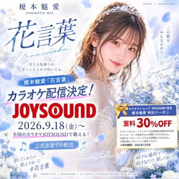

Virtual AI Artist 榎本魅愛の楽曲「花言葉」が、
2026年9月18日（金）より全国のJOYSOUND対応機種にてカラオケ配信されることが決定しました。
今回の「花言葉」は、公式音源での配信となります。
これまで作品として聴いていただいてきた「花言葉」が、
今度はカラオケという場所で、皆さん自身の声によって歌われる一曲になります。
誰かを想いながら。
大切な人と一緒に。
あるいは、自分だけの思い出を重ねながら。
それぞれの「花言葉」を、ぜひJOYSOUNDで歌ってください。
何回だって、君に届け。
配信情報
アーティスト：榎本魅愛 / ENOMOTO MIA
楽曲：花言葉
配信開始：2026年9月18日（金）～
配信：JOYSOUND対応機種
音源：公式音源
特別クーポン
カラオケ配信を記念して、
「カラオケショップ JOYSOUND」で利用できる特別クーポンをご案内します。条件・詳細はリンク先をご確認ください。
9月18日からJOYSOUNDで「榎本魅愛」を検索して、
ぜひ「花言葉」を歌ってみてください。
SNSでの「歌ったよ！」報告もお待ちしています。
#榎本魅愛 #花言葉
恋するすべての瞬間を、歌にする。
榎本魅愛 / ENOMOTO MIA
SUZUKA